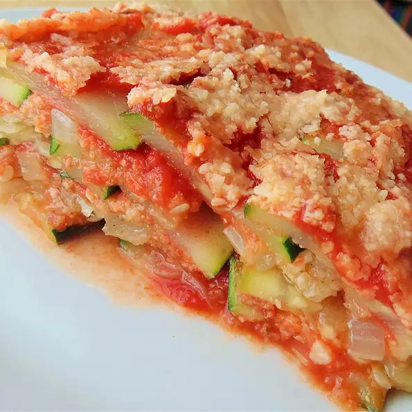

Eggless Zucchini Lasagna

Eggless version of zucchini lasagna.
Ingredients
- 3 large zucchini, trimmed and cut lengthwise into long strips
- 2 tablespoons olive oil
- 1 onion, chopped
- 2 cloves garlic, chopped
- 1 cup seasoned bread crumbs
- 1 cup grated Parmesan cheese (Optional)
- 1 tablespoon Italian herb seasoning
- 3 cups tomato sauce
- ¼ cup grated Parmesan cheese, or as needed (Optional)
Steps
-
Preheat oven to 375 degrees F (190 degrees C). Grease a 9x12-inch baking
dish.
-
Bring a large pot of water to a boil and add zucchini slices; boil for 3
minutes. Drain.
-
Heat olive oil in a skillet over medium heat and cook onion and garlic,
stirring frequently, until onion is translucent, about 5 minutes.
-
Mix bread crumbs, 1 cup Parmesan cheese, and Italian herb seasoning in a
bowl.
-
Spoon 3 tablespoons tomato sauce into bottom of the prepared baking dish
and top with 1/3 of the zucchini slices, 1/3 of the onion-garlic mixture,
and 1/3 of the crumb-Parmesan cheese mixture. Repeat layers twice more,
starting with 1/2 of remaining tomato sauce and layers of zucchini, onion,
and crumb mixture. End with remaining tomato sauce in a layer; sprinkle
1/4 cup Parmesan cheese over the top.
-
Bake in the preheated oven until lasagna begins to bubble, about 30
minutes.
-
Preheat oven's broiler and broil the lasagna until cheese topping is
browned, 2 to 3 minutes. Let casserole stand for 15 minutes to set before
serving.